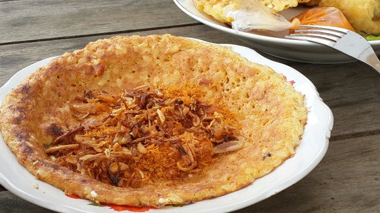

Kerak Telor

Klik disini untuk melihat cara pembuatannya.
Kerak telur adalah makanan asli daerah Jakarta (Betawi), dengan bahan-bahan beras ketan putih, telur ayam atau bebek, ebi (udang kering yang diasinkan) yang disangrai kering ditambah bawang merah goreng, lalu diberi bumbu yang dihaluskan berupa kelapa sangrai, cabai merah, kencur, jahe, merica butiran, garam dan gula pasir. Kerak telor dapat ditemukan pada hari biasa. Anda bisa menemukan kerak telor di sekitar Kota Tua, Jakarta Barat. Menurut sejarah, Kerak Telor sudah ada dari zaman kolonial Belanda, kerak telor diciptakan oleh masyarakat Betawi secara tak sengaja Pada tahun 1970-an.
Bahan-bahan:
1/2 butir Kelapa Parut (sangrai hingga kering)
2 sdm udang rebon goreng
1 sdm gula pasir
1/2 sdt kaldu jamur bubuk
1 bungkuskecil Bon Cabe
1 butir telur
1/2 sdt bumbu putih (bawang merah dan bawang putih)
2-3 sdm nasi putih
Sejumput garam, lada, dan kaldu bubuk
Bubuk kelapa rebon dan bawang goreng
Langkah:
- Buat bubuk kelapa rebon dengan cara sangrai kelapa parut hingga garing dan berwarna kecoklatan, lalu haluskan bersama udang rebon yang sudah digoreng, gula, garam, kaldu, dan bubuk Bon Cabe. Saat menghaluskan, jangan terlalu ditekan agar tidak keluar minyak. Sisihkan.
- Kocok telur, nasi, garam, lada, kaldu, bumbu putih, dan 2 sdt bubuk kelapa rebon hingga rata.
- Tuang ke dalam teflon, ratakan, dan masak hingga bawahnya agak gosong dan berkerak. Balik dan lakukan juga hingga agak gosong. Angkat.
- Taburi dengan 2 sdt kelapa rebon dan 1 sdt bawang goreng.
- Kerak telor pun siap dinikmati selagi hangat.
Diterbitkan oleh Azmi